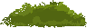
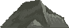

Indie Visual DNA 2026
Тренды: tactile UI, dreamy lighting, graphic minimalism.
+24%
скорость поиска референсов с фильтрами
Исследуй лучшие арт-направления, UI-паттерны и атмосферу культовых игр. Используй каталог референсов, чтобы собирать идеи под свой проект.
Тренды: tactile UI, dreamy lighting, graphic minimalism.
Сравнивай визуальные эпохи и динамику трендов.

Изучай подходы команд с сильным art direction.

Собирай moodboard под задачи своего проекта.
Методика от color script до кадра геймплея: тон, фактура, ритм и фокус внимания.
Пиксель-арт + живописные градиенты и мягкий post-processing.
Интерфейс как часть мира: не поверх, а внутри атмосферы игры.
От low-poly dreamscape до gothic metroidvania - смотри подборку в каталоге с фильтрами по годам, студиям и стилям.
Перейти к подборке